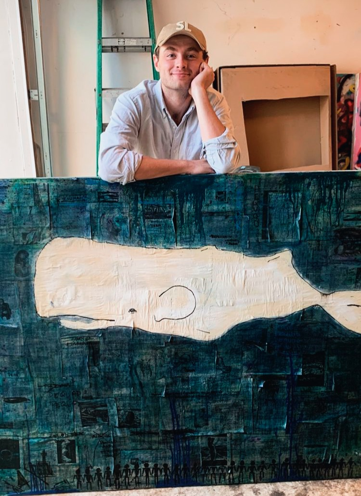
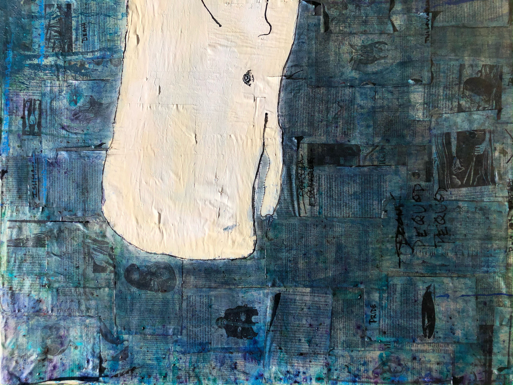

This painting is the largest I’ve done at 48’x60’. The canvas is covered in pages cut from my own childhood copies of both Moby Dick and Gray’s Anatomy (yes, the book).
I covered this large canvas with layers of pages in various orientations. Using various shades of slightly diluted blue and green paint I added depth and color to the piece.
At the bottom of the canvas you can see 30 stick figure individuals lined up shoulder to shoulder in black ink. The center of the piece is a three dimensional whale sculpted out of plaster atop the canvas.


The whale is outlined with thin black paint and takes up much of the large canvas.